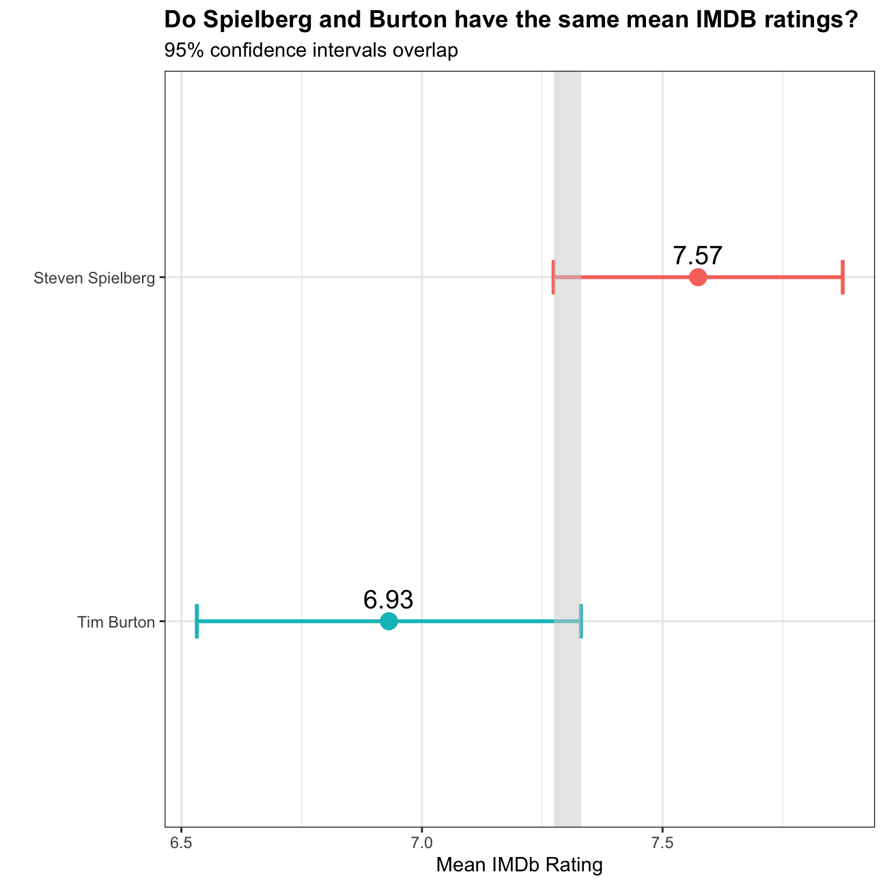
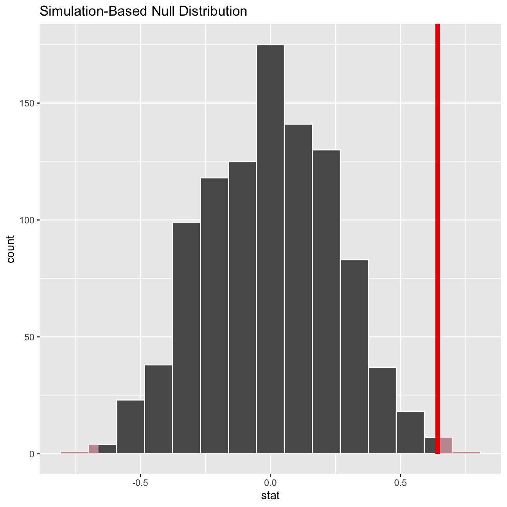

Who has got the upper hand on IMDb ratings? On average, Spielberg’s movies achieve a rating of 7.57, while Burton’s movies achieve a rating of 6.93. However, there is some overlap in the 95% confidence interval for their ratings. See the chart below for a visualization.
spielberg_burton_movies<-movies%>%
filter(director=="Tim Burton"|director=="Steven Spielberg")%>% #filter by director called Tim Burton and Steven Spielberg
group_by(director)%>% #group by director
summarise(mean_rating = mean(rating, na.rm = TRUE), #calculate mean value
sd_rating = sd(rating, na.rm=TRUE), #calculate standard deviation
count = n(), #count the number
se_rating = sd_rating/sqrt(count), #calculate standard error
t_critical = qt(0.975, count-1), #calculate t-statistics
margin_of_error = t_critical * se_rating, #calculate margin of error
lower = mean_rating - t_critical * se_rating, #calculate the lower part of CI
upper = mean_rating + t_critical * se_rating) #calculate the upper part of CI
lower_boundary<-as.numeric(spielberg_burton_movies[1,8])
upper_boundary<-as.numeric(spielberg_burton_movies[2,9])
ggplot(spielberg_burton_movies, aes(x = mean_rating, y =reorder(director,mean_rating)))+ #draw a new ggplot
geom_point(aes(color=director,fill=director),size=4,shape=21) + #draw the point value colored and filled by director
geom_errorbar(aes(xmax =lower, xmin = upper,color=director),width=0.1,size=1)+ #draw the error bar
labs(title="Do Spielberg and Burton have the same mean IMDB ratings?",subtitle="95% confidence intervals overlap",x="Mean IMDb Rating",y="")+ #add labs
theme_bw()+ #set the theme
geom_text(aes(label=format(mean_rating,digits=3,format="f")),vjust=-0.7,size=5)+ #add data label
geom_rect(aes(xmin = lower_boundary, xmax = upper_boundary,ymin = -Inf, ymax = +Inf), fill = "#D3D3D3", alpha = 0.3)+ #add the overlapped part
theme(legend.position = "none")+ #hide the legend
theme(plot.title = element_text(face="bold")) #bold the main title
In order to be 100% sure, we can look at some statistical information before we crown the king of IMDb.
director_ratings<-movies%>%
filter(director=="Tim Burton"|director=="Steven Spielberg")%>% #filter by director called Tim Burton and Steven Spielberg
group_by(director)%>% #group by director
select(director, rating) #select director and rating
t.test(rating ~ director, data = director_ratings) #use t.test() to calculate##
## Welch Two Sample t-test
##
## data: rating by director
## t = 3, df = 31, p-value = 0.01
## alternative hypothesis: true difference in means is not equal to 0
## 95 percent confidence interval:
## 0.16 1.13
## sample estimates:
## mean in group Steven Spielberg mean in group Tim Burton
## 7.57 6.93obs_diff_director <- director_ratings %>%
specify(rating ~ director) %>% #use specify() to associate rating and director
calculate(stat = "diff in means", order = c("Steven Spielberg", "Tim Burton")) #calculate difference in means
null_dist_director <- director_ratings%>%
specify(rating ~ director) %>% #use specify() to associate rating and director
hypothesize(null = "independence") %>%
generate(reps = 1000, type = "permute") %>% #repeat 1000 times
calculate(stat = "diff in means", order = c("Steven Spielberg", "Tim Burton")) #calculate difference in means
null_dist_director %>% visualize() +
shade_p_value(obs_stat = obs_diff_director, direction = "two-sided") #shape p_value
null_dist_director %>%
get_p_value(obs_stat = obs_diff_director, direction = "two_sided") #get p_value## # A tibble: 1 x 1
## p_value
## <dbl>
## 1 0.004Null hypothesis: The difference of the mean ratings of Spielberg and Burton is equal to 0.
Alternative hypothesis: The difference of the mean ratings of Spielberg and Burton is not equal to 0.
Conclusion: Based on both the t.test and the infer command, there seems to be a statistically significant difference in the mean ratings of Spielberg and Burton based on a 0.014 p-value using the infer command and a 0.01 p-value using the t.test command. Therefore we reject the null hypothesis.
Hence, the Spielberg wins the battle over IMDb ratings.